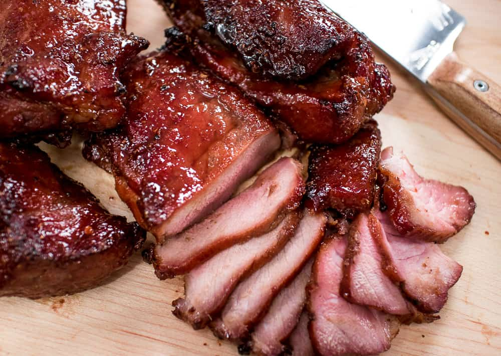

Char Siu 叉烧

Char siu (叉烧) is a type of Cantonese roast meat.
Char siu is its Cantonese name, but in Mandarin, it is known as cha shao.
To make char siu, pork is marinated in a sweet BBQ sauce and then roasted.
Flavourful marinated pork with a sweet-salty glaze, roasted to perfection.
It's a classic Chinese BBQ that can be served with rice or noodles.
(Prep time above doesn't include 24-48 hr marinating time.)
Prep Time: 20 mins
Cook Time: 35 minutes
Total Time: 55 minutes
Yield: 6 servings
Ingredients
- 2 lb pork shoulder roast
- 2 Tbsp soy sauce
- 2 Tbsp hoisin sauce
- 2 cubes red bean curd + 1 Tbsp liquid
- 1 Tbsp five spice powder
- 2 Tbsp honey
- 2 Tbsp Chinese cooking wine
- ½ tsp ground white pepper
- 1 tsp sesame oil
- 2 cloves garlic, finely grated or mashed
Glaze
- 2 Tbsp honey
- 2-3 tsp red bean curd liquid
Steps
-
Cut the pork roast, along the direction of the meat's grain,
into long strips no larger than 2-inch thick.
You can trim off big chunks of fat but don't trim off too much.
-
In a small mixing bowl,mash the red bean curd until there are no more big chunks.
Add all remaining ingredients (except for the glaze ingredients) and whisk until combined.
-
Pour the marinade over the pork and make sure all pieces are coated.
Marinate in the fridge for 24-48 hours (do not do less than this!),
turning the pork half way through to ensure even distribution of marinade.
-
When ready to roast, preheat the oven at 375°F/190°C convection (if your oven has a fan) or 400°F/200°C regular (no fan).
-
Line a baking sheet with foil then put a roasting rack on it. Place the pork on the rack. Roast for 15 minutes.
-
While the pork is roasting, combine the honey and the red bean curd liquid (or cooked leftover marinade) to make the glaze.
-
Remove the pork after 15 minutes,
brush the glaze on it (don't worry about the bottom side),
then put it back for another 5-7 minutes or until the glaze has dried onto the pork.
-
Remove the pork and glaze again,
then put it back in the oven for another 5-7 minutes.
-
Glaze the pork again (you should glaze a total of 3 times), then roast until the pork is done.
If using a thermometer, the internal temp should reach 155°F before removing from the oven.
-
If the pork has not browned or charred to your liking at this point,
you can switch the oven to "broil" and broil the pork on the top rack,
with the oven door open, for a few minutes to get some charring.
-
Let the pork rest for 10-15 minutes before slicing and eating. Enjoy.